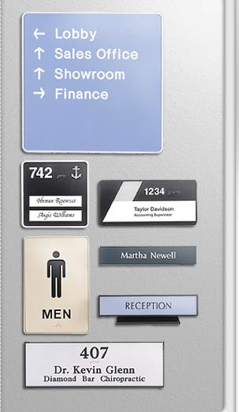

|
Architectural
Frames in Molded Plastic is a round and square
corner system designed for quality interior
signage.
ARCHITECTURAL PLASTIC FRAMES
- Molded in one of 6 matte colors:
Gray, Almond, White, Brown, Arch Brown, and
Black.
- All frames have a 1/2" outside
depth, 1/8" thick walls, and mounting holes
for attaching to walls.
- Each frame is designed to accommodate
all sign material from 1/16" to 1/8" thick,
or it's own plastic injected molded plate.
DESK BARS
- The desk bar is also available
in White, Gray, Almond, Brown, Arch Brown,
and Black.
- Desk Bars are designed as
a simple architectural nameplate holder or
counter sign.
- They are 1" thick and have
an inside dimension of 1 3/4" x 9 1/8" to
accommodate our injected molded plate.
MOLDED PLATES FOR ARCHITECTURAL
FRAMES
- Molded plates are 1/8" thick
with a 1/16" reveal around the perimeter leaving
a handsome border.
- Each plate is designed to
snap in and out of respective frames for changeable
signs, or can be permanently mounted with
two sided tape.
- Plates are molded in the same
six colors as the frames and then are stamped
with a tough durable matte finish suitable
for hot stamping, vinyl letters, or silk screening.
- For 2 ply engraving, 6 core
colors and 14 surface colors can be combined
for a quality contrasting engraved plate.
|

|